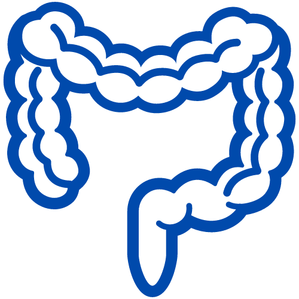
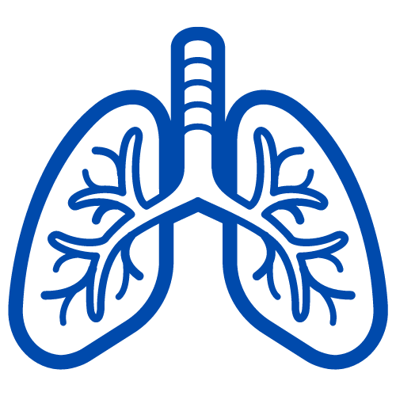
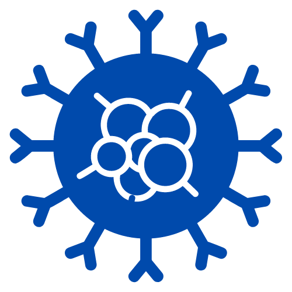

Nuestra misión es Acompañarte
Sumate a nuestro Programa de apoyo a pacientes

Nuestra misión
Nuestra misión es brindale a nuestros pacientes un soporte integral, respondiendo a sus necesidades en cada etapa del tratamiento indicado y enfocados a brindar la mejor calidad de servicios.
Terapias
Cáncer Colorrectal
El cáncer colorrectal es el que se origina en el colon o el recto. A estos cánceres también se les puede llamar cáncer de colon o cáncer de recto (rectal) dependiendo del lugar donde se originen. El cáncer de colon y el cáncer de recto a menudo se agrupan porque tienen muchas características comunes. El cáncer se origina cuando las células en el cuerpo comienzan a crecer en forma descontrolada. Casi cualquier célula del cuerpo puede convertirse en cáncer y propagarse a otras partes del cuerpo
Cáncer de Pulmón
El cáncer de pulmón es un cáncer que se forma en los tejidos del pulmón, generalmente en las células que recubren los conductos de aire. Es la principal causa de muerte por cáncer tanto en hombres como mujeres. Hay dos tipos principales, cáncer de pulmón de células pequeñas y cáncer de pulmón de células no pequeñas. Estos dos tipos crecen de manera diferente y se tratan de manera diferente. El cáncer de pulmón de células no pequeñas es el tipo más común.
Leucemia
La leucemia es un tipo de cáncer de la sangre que comienza en la médula ósea, el tejido blando que se encuentra en el centro de los huesos, donde se forman las células sanguíneas. El término leucemia significa sangre blanca. Los glóbulos blancos (leucocitos) son producidos en la médula ósea y el cuerpo los utiliza para combatir infecciones y otras sustancias extrañas. La leucemia lleva a un aumento incontrolable de la cantidad de glóbulos blancos. Las células cancerosas impiden que se produzcan glóbulos rojos, plaquetas y glóbulos blancos maduros (leucocitos) saludables. Entonces, se pueden presentar síntomas potencialmente mortales a medida que disminuyen las células sanguíneas normales. Las células cancerosas se pueden propagar al torrente sanguíneo y a los ganglios linfáticos. También pueden viajar al cerebro y a la médula espinal (el sistema nervioso central) y otras partes del cuerpo. La leucemia puede afectar a niños y adultos. Las leucemias se dividen en dos tipos principales:
- Aguda (que progresa rápidamente).
- Crónica (que progresa más lentamente).
Servicios

Conocé todos los servicios que tenemos para ofrecerte.
 Iniciar Sesión
Iniciar Sesión